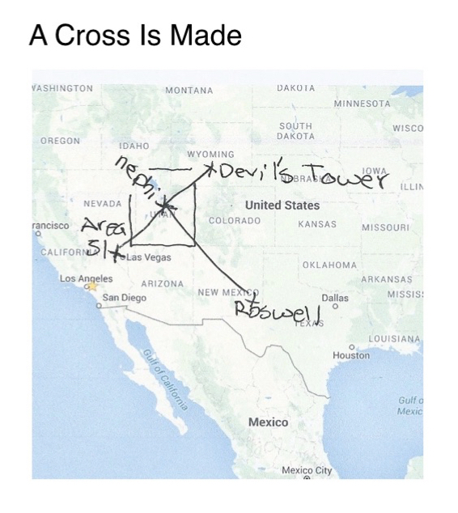
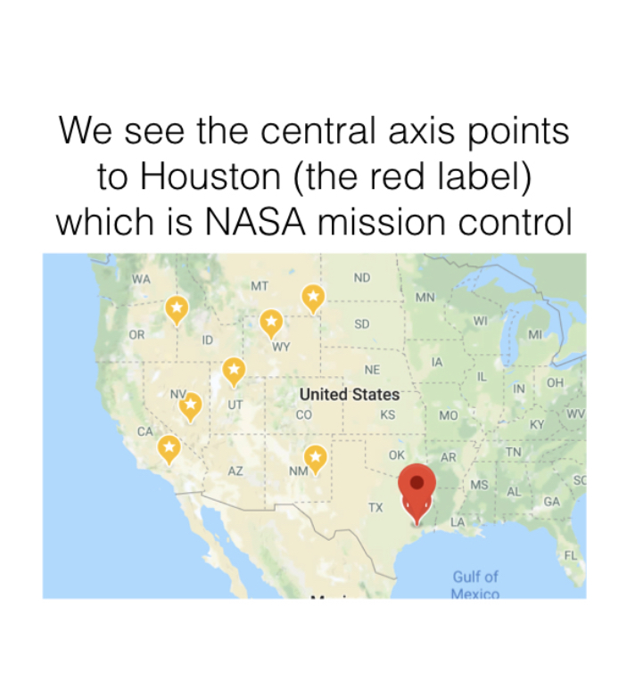
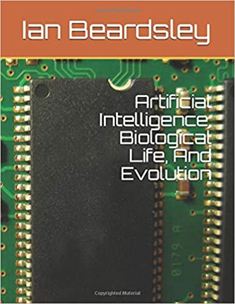
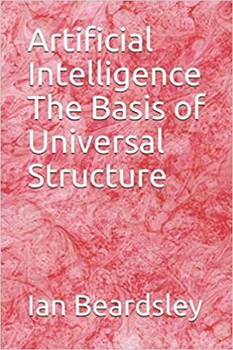

Summary and Update To My Extraterrestrial Theory (November 9 2021)
My Muffon case number was 67958 which referred to case 56789. It was in UTAH at the same time as the SETI Wow! Signal 10:17 PM Eastern Time and Nephi is at the center of Utah and is Hebrew for those who came from above. To its left in Arizona is Area 51 the secret base where it is believed we are back-engineering ET craft. To the right in Wyoming is Devils Tower which is where we made first contact in Steven Spielberg’s Close Encounter of the Third Kind. Directly below is Houston of NASA’s mission control. Now I published Selected Essays in Cosmic Archaeology that was my best work for 2021 and the culmination of a project I began over 20 years ago, and I did this in hardback for the first time with Amazon. The ISBN assigned to the book was
979-8755597760
Other than the zero, these are the numbers that make up the Muffon case number in order reading from left to right. I now notice that four of the five digits in this case number is the fine structure constant alpha (mysterious number that appears throughout nature), squared which is the value obtained by the potential energy of the first circular electron orbit in in the Bohr atom divided by the mass of an electron times the speed of light.
Alpha^2=1/18769
Interestingly, in this book I propose the idea of proton-seconds and come up with the unit of one second as significant. Interestingly in a follow up paper I find it connected to six seconds as well where the fundamental unit of hydrogen in chemistry is concerned (1 proton), When I divide the Nineveh constant by this I get the consecutive integers missing from the muffin case number 56789 which would be 2, ,3 , 4. The Nineveh constant was a number discovered in Ancient Sumerian cuneiform tablets, the Sumerians being the people who formed civilization inventing agriculture, mathematics, and much more. Their creation myth says these discoveries were given to them by the Annunaki, which means “Those who came from above” and was later translated into Nephilm in Hebrew according Zecharia Sitchin. Maurice Chatelain discovered that the Nineveh constant was the number long sought by alchemists, astrologers, and astronomers that would describe all the planetary orbits and conjunctions. Maurice Chatelain headed the communication aspects of the Apollo missions to the moon. The number is
195,955,200,000,000
Divided by our 6 seconds times 60 second per minute, this gives the value 5.4432E11.
End update
Excerpt From The ET Enigma, 2nd Edition
I reported a black orb to MUFON and it was case 67958 on July 09 2015 Claremont Ca in the early evening about an hour before sunset. They wrote back and said it was probably a bat or a bug.
I found the case numbers interesting because I noticed they could be written as the consecutive integers 5, 6, 7, 8, 9. So, I looked up case 56789.
It was in Utah at 10:17 PM. Interestingly, I knew that the SETI Wow! Signal was at 10:17 PM Eastern time. It was thought by SETI (Search For Extraterrestrial Intelligence) to have all the earmarks of an extraterrestrial signal. Hence its name (The Wow! Signal). It was on August 15, 1977 at 10:17 PM Eastern time. It lasted 72 seconds.
Looking at a map of Utah, a predominantly mormon state, I found at its center was a city called NEPHI. I Knew that Nephilim was Hebrew for those who came from above. According to Zecharia Sitchin, Nephilim was Hebrew for the Sumerian Annunaki, which were said to be those who came from the heavens and gave them science, agriculture, mathematics, and government. The Sumerians were according to archaeologists, the first to settle down from hunting and invent agriculture and civilization.
I then noticed to the left of Nephi, in Nevada is Area 51, the famed secret military base where many think there are extraterrestrials teaching us to make craft capable of interstellar travel. I noticed to the right was Devil’s Tower, the National Monument where our first contact was made in the movie Close Encounter’s of the Third kind. I then noted directly below Nephi was Roswell New Mexico, where a UFO was thought to have crashed and three bodies of short (3 foot tall aliens) were recovered. This forms a cross for which I calculated the top portion using the golden ratio. This top was in Treasure Valley on the Idaho-Oregon Valley. I noticed the cross pointed to Houston, Texas, NASA mission control.
We place a star at Nephi, a star at Roswell, a star at area 51, a star at treasure valley, and to complete the cross a star at the Arapahoe Indian reservation near the the center of Wyoming which is, a reflection of area 51 about the Nephi-Roswell axis. See the illustration below…

We place a star at Nephi, Roswell, Area 51, Treasure Valley, and right on Devils Tower in Wyoming. We also place a star at Houston, NASA Mission Control…

ISBN-13: 978-1093895674 On April 14, 2019 I published the culmination of a project that I was working on when the strange ET connections occurred, and the last seven numbers of the ISBN it received at Amazon were 3895674 which can be arranged as the consecutive integers 3, 4, 5 ,6 , 7, 8, 9. Compare this with my UFO case number 67958 which can be arranged as 5, 6, 7, 8, 9. The Book was:

Further coincidences began to occur. In my book The Stories That Unfolded where I began to write them out, it received the the isbn:979-8649401401. Notice the first seven digits are 9798649 followed by 401401. These first seven digits have 4, 6, 7, 8, 9 follows by repetition of 401. I wrote in it the following:
Having grown up on a farm in the Northwest, I wore a Stetson cowboy hat (felt) but a Bailey in the summer (Straw). I have always worn Levi denim jeans. I have also always known that Levis were founded on my Birthday from the label on the back (Established May 20). They were the original cowboy Jeans where Levi Strauss came up with the idea of making Jeans durable enough for the cowboy by riveting the stress points. He got a patent for his original riveted denim jeans. Interestingly, looking into the matter deeper, I found Stetson made the original cowboy hat called Bossman of the Plains, and that their centenary (celebration of their 100th birthday since the creation of this hat) was on my birthday as well (1965). However, having moved back to Southern California, I wanted a hat with a smaller brim, so I looked into Bailey hats and decided I liked their felt hats as much as those of Stetson. Interestingly, I had read the prequel to the Isaac Asimov Foundation Series, where humanity has spread throughout the galaxy and is in search of Earth, the fabled planet from which all life in the galaxy started. This took me to the prequel to those stories, The Robot Series, where we are at Earth in the future and Elijah Bailey leads humanity into leaving earth and colonizing the galaxy. It is deeply connected to robots (artificial intelligence). I find it interesting that his name was Bailey, like the cowboy hat I had recently switched to and, furthermore, that I have been not just been doing research on artificial intelligence and its connection to biological life (Beardsley, Mathematical Structure, 2020), but that a series strange coincidences lead to my book The ET Enigma, which seems to indicate an extraterrestrial presence on Earth.
Myself in a Stetson
Myself in a Bailey
The theories I was working on unfolded with interesting coincidences as well outlined in the same book. I wrote:
The developments of my theory has paralleled the development of Einstein’s Theory of Relativity remarkably. His theory made use of a little known mathematics, Tensor Calculus, that was developed in Italy by Levi Civita much earlier (29 March 1873 - 29 December 1941) a pupil of its inventor . He needed this mathematics to formulate his theory, but did not know how to use it. He asked his friend, Marcel Grossman to teach it to him. My theory needed a little known calculus as well that was developed in Italy much earlier, when Tullio Volterra created the product integral to solve differential equations in 1871. It was proposed later to be a generalized form of calculus by, get this, people of the name Grossman and Katz. Furthermore, as tensor calculus was a generalization of vector calculus, so is product calculus of classical calculus.
The need for relativity stemmed from an experiment done on the mountain that forms the northern border of the valley where I live, The San Gabriel Valley, the mountains being the San Gabriel Mountains, the experiment the Michelson-Morely experiment to determine the speed of light in two different directions.
The theory began when my wife and I, she Italian, went to the library at the colleges so she could use the computers to look for a job. I used the computers while she did that, to research mathematics.
At some point I started developing work in the connection between artificial intelligence (AI) and biological life mainly as a way to understand the origins of life. Interestingly, as of recently I have become captivated by the work of Abel and Trevors, who have written a paper on how biological life can evolve by Natural Selection, but the the operating system and programming instructions cannot come into existence by Natural Selection. Abel and Trevors coined these phrases from computer science, AI operating systems and programming languages being parallel to biological life’s triplet codon system at the DNA level.
It turns out that Abel, approaching the origin of life question from a computer science background, is also using a new emerging science to help, called biosemiotics, that uses linguistics, or the study of language in other words to understand the coding nature of life. In other words, the relationships between words might explain the relationships between the chemical components of biological life, in particular, of the coding language.
In a sense, the relationships I am discovering in my theory between molar mass, density, and radius of elements and compounds, since they are mathematically elegant, not only suggest that this could be in a sense the operating systems of AI and Biological life at the most primary level, but that life could be mathematical in structure, in many instances purely algebraic.
I began to look into product calculus, because I had the question in mind, whether I could write the arithmetic mean, harmonic mean, and geometric mean all as one equation. Product calculus is based on the geometric mean while classical calculus the arithmetic mean.
Essentially, I found the problem arises that one needs to use a limit operation where the geometric mean is concerned and that the geometric mean is a definition in product calculus, not derived. But, I found that because there are two core AI elements, I could do it with the special case relationships between all these means that exist for n=2. It could actually already be done without limits for any size of n, but required an inverse function operation, which I wanted to remove so I would have an algebraic expression that could be manipulated algebraically.
The paper I refer to by D.L. Abel and J.T. Trevors is Chance and necessity do not explain the origin of life. (Cell Biology International 2004)
Ultimately I feel we cannot speak of biological life without comparing it to some other construct like AI, I feel it is a purpose of biological life (C, N, O, H) to discover the properties of P, B, Si so it can make computing machines ultimately necessary to its survival. I feel artificial intelligence and biological life are mathematical constructs.
For my work on the mathematical structure of biology and its connection to AI see my paper Silicon and Carbon, my paper Bone, or my paper Biological Life and Electricity.
The research to date is at: Genesis Project(Update December 23 2020)
It was incredible enough that the last digits in the isbn for my ai book were the first 9 consecutive integers, which I saw in relation to my ufo muffon report 67958, which pointed me to the enigmatic muffon report 56789. I have now published a book on AI that had last isbn digits 697589 which is very much the 67958 of the enigmatic muffon report.
ISBN-13 : 979-8568697589
The last digits being: 697589
Interestingly: 67958
